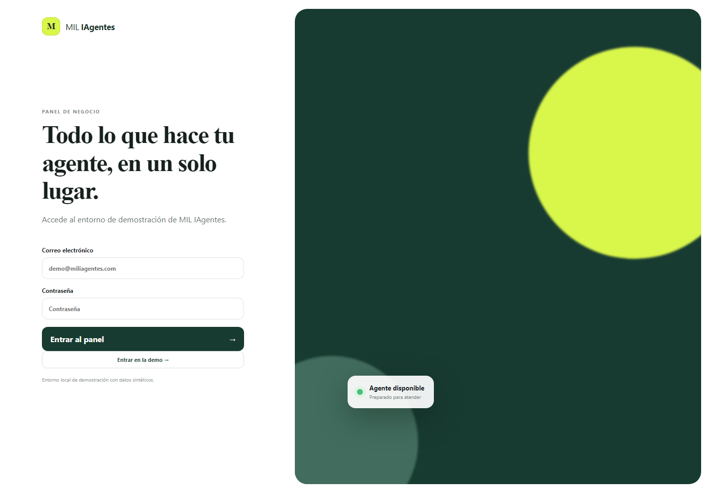

Pienso desde el problema.
Empiezo por entender contexto, restricciones, impacto y quién necesita realmente la solución.
Vengo de operaciones y negocio. Hoy aplico sistemas, automatización e inteligencia artificial para resolver problemas de forma práctica, medible y útil.
No intento presentarme como especialista en todo. Mi valor está en moverme entre el problema, el sistema y la persona que finalmente lo usa.
Empiezo por entender contexto, restricciones, impacto y quién necesita realmente la solución.
Sistemas, datos, APIs, automatización, frontend o IA solo tienen sentido cuando trabajan juntas con un objetivo claro.
Pruebo, observo, corrijo y solo después amplío. No considero terminado algo solo porque “parece funcionar”.
El centro es mejorar un proceso, reducir una fricción o crear una experiencia que resulte útil.
Sin porcentajes ni barras arbitrarias. Solo ámbitos que he utilizado de forma práctica dentro de proyectos reales.
Linux, Windows, servicios, VPS, Docker, logs, health checks y troubleshooting.
Procesos, workflows, APIs, eventos, integraciones y reducción de tareas repetitivas.
Persistencia, consultas, estructura, normalización y control básico de acceso.
LLM locales, agentes y NLP integrados dentro de productos y procesos.
Interfaces web, PWA, mobile-first, prototipado e iteración centrada en usuario.
Equipos, costes, stock, servicio y organización: el contexto que da sentido al resto.
No están aquí para contar cada detalle técnico. Están para enseñar el tipo de problemas que he intentado resolver y cómo se ven las soluciones.

Un asistente para comparar compras y buscar productos con más contexto, menos ruido y datos explicables.
Ver el caso ↗
Una plataforma de agentes y citas donde fiabilidad y validación importan antes que el go-live.
Ver el caso ↗
Un producto interactivo donde el reto es que la tecnología desaparezca detrás de una experiencia sencilla y agradable.
Ver el caso ↗MIL Trader · Automatización del hogar · herramientas internas y prototipos.
Mi experiencia previa explica por qué hoy me importa tanto que una solución sea útil en el mundo real.
Servicio, planificación, eventos, equipos y stock.
Coordinación, horarios, stock y experiencia de cliente.
Costes, operaciones, equipos, stock, marketing y decisiones de negocio.
Sistemas, automatización, IA y producto construidos a partir de necesidades reales.
La IA acelera mi análisis, aprendizaje, desarrollo, pruebas y documentación.
Yo sigo definiendo el problema, los límites, qué se valida y qué se despliega. Si una herramienta propone algo que no puedo defender, no debería formar parte de la solución.
Especialmente en Organización y Sistemas / IT, automatización, aplicaciones internas, integraciones, soporte avanzado, datos, eCommerce o IA aplicada.